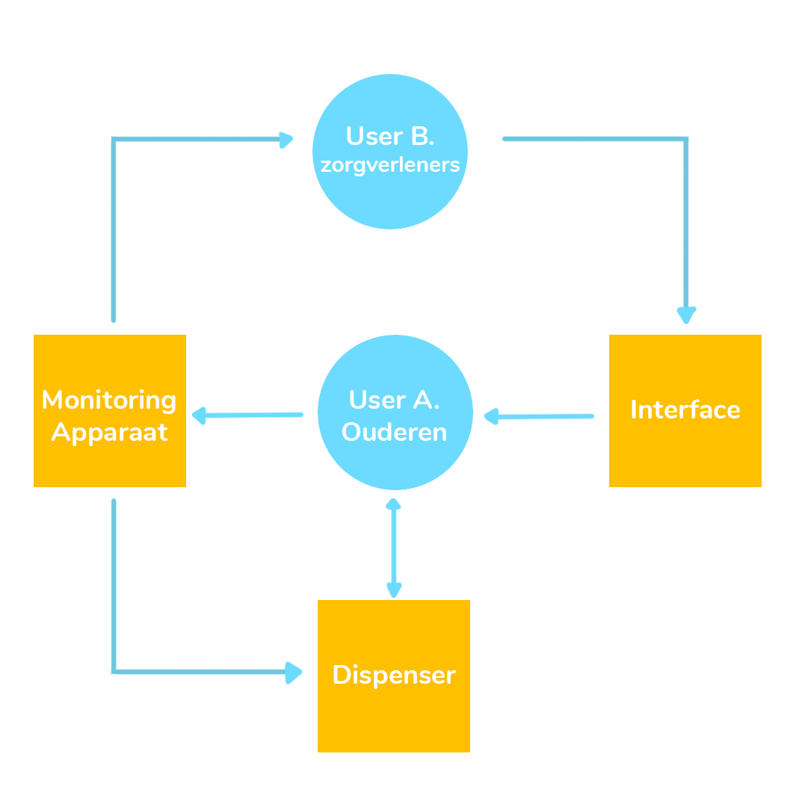
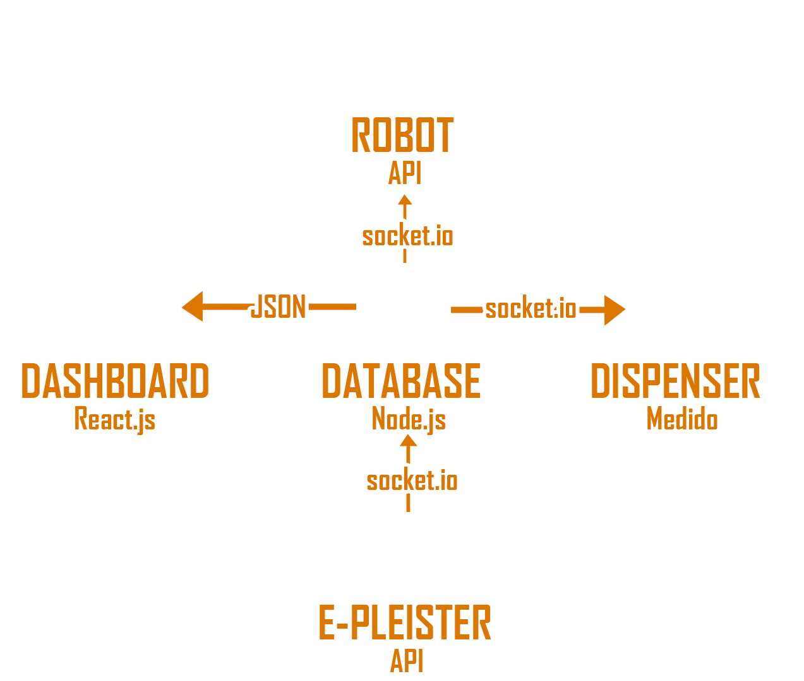

Voor gate 1 was er nog niet veel te doen bij het DEV onderdeel, dit kwam vooral omdat het eerst onderzoeken was wat er nu eigenlijk gemaakt kan worden. Hierbij hebben we al wel gekeken naar wat voor producten er al bestaan voor ons probleem, en op wat voor manier deze in elkaar zitten. Hierbij is dan ook gekeken naar een eventuele Code editor die gebruikt kan worden bij onze ideeën.
Voor de available product analysis hebben we gebruik gemaakt van apps die er op dit moment zijn voor zorgverleners, en die ze gebruiken om hun werk te doen. Hierbij is vooral te zien dat ze veel verschillende apps hebben voor verschillende taken. De meeste van deze apps zijn op de telefoon aangezien deze altijd mee wordt genomen door een zorgverlener, dus deze het meest accessible is.
Available product AnalysisKijkend naar de meest gebruikte apps voor zorgverleners is te ziendat er verschillende apps zijn voor verschillende delen van het beroep. Er is niet één app die al deze functies samenvoegt en dit kan misschien hinderend zijn voor de verleners aangezien ze verschillende informatie in de verschillende apps moeten zoeken. De verschillende apps die er zijn focussen zich vooral op de medicatie en het bijhouden van de ouderen. Er zijn bijvoorbeeld apps die het gewicht van de ouderen bijhoudt en hierop laat zien of hun gewicht vooruit of achteruit gaan, dit kan benodigde informatie zijn voor een zorgverlener en het is dus goed als een app die automatisch bijhoudt en hier een melding over geeft wanneer dit alarmerend is. Ook zijn er apps waar in vermeld wordt wat de juiste dosering is voor verschillende medicijnen, hier kan de zorgverlener het merk of het type medicijn zoeken en er staat vermeld wat de juiste hoeveelheid is om in te nemen voor declient.
Het is belangrijk om User stories te maken bij een product. Hierdoor kan er per functie aangekaart worden wat er nu daadwerkelijk bij moet komen als functies zodat het overzichtelijker is wat er nog gedaan moet worden binnen het project.
Het is hierbij slim om het in zo veel mogelijk kleinere user stories te hakken, in plaats van één grote user story (EPIC) te beginnen aangezien het dan een stuk onduidelijker is welke functies er nu precies in moeten.
Ook is het slim om zo de taken te verdelen binnen de groep zodat deze beter afgestreept kunnen worden wanneer er een POC klaar ligt om te testen.
| User Story | Acceptance Criteria |
|---|---|
| Als een oudere wil ik een dispenser die een duidelijk signaal geeft wanneer er medicatie klaarligt, zodat ik deze niet vergeet. | *Een userinterface die verteld wanneer het alarm afgaat.
*Een alarm sound die duidelijk is *2 meldingen hebben verschillende geluidjes *Het alarm voor een paar seconden aflaten gaan voordat er een melding wordt doorgestuurd. |
| Als een oudere wil ik een user interface die duidelijk is voor mij, zodat ik met mijn minder technisch begrip het wel begrijp. | *Medicatie met juiste hoeveelheid eruit laten komen.
*Een visuele stimuli die duidelijk is *User interface die goed te gebruiken is voor ouderen. (door middel van onderzoek) *Grote letters *Duidelijke plaatjes |
| Als oudere wil ik een interface die laat zien wanneer de medicatie eruit komt, zodat ik dit kan mee plannen met de rest van mijn dag. | *Interface die laat zijn hoe laat het is
*Laat zien hoe laat de medicatie komt *Geef een melding wanneer de medicatie eruit komt. *Verstelbare tijd alleen in kunnen voeren als mantelzorger of zorgverlener |
| Als zorgverlener wil ik zien welke medicatie aanwezig is, zodat ik zo min mogelijk tijd verlies met het aanvullen. | *Interface geeft hoeveelheid medicatie aan
*Interface geeft automatisch melding wanneer leeg / bijna leeg *Dispenser stuurt een melding welke medicatie aanwezig is. |
| Als mantelzorger wil ik een dispenser die duidelijk informatie geeft zodat ik weet waar de oudere aan toe is. | *Interface geeft aan de tijd wanneer de medicatie ingenomen moet worden.
*Interface geeft aan of de medicatie al genomen is voor de dag. *Interface geeft aan of er eventuele medicatie is vergeten voor de dag. |
| Als zorgverlener wil ik dat de dispenser mij meldingen geeft wanneer de client nog geen medicatie heeft genomen, zodat ik weet wanneer er iets aan de hand is. | *Meldingen met accurate data
*Data visualiseren *Een communicatie API tussen de dispenser en de app *Een communicatie API tussen de dispenser en het monitoren |
Het is handig om een architectuur diagram te maken om beter in te kunnen zien uit wat voor onderdelen het product nu bestaat. Bij het opstellen van de verschillende functies wordt er ook gekeken naar hoe deze gebruikt worden door de verschillende doelgroepen. Hierbij maak je dus duidelijk wat het uiteindelijke doel is voor de functie en waarom ze dus zo belangrijk zijn.
Er is hier uit feedback gekomen dat dit eigenlijk geen architectuur diagram is maar meer een workflow diagram. Hierdoor heb ik nog een keer gekeken naar verschillende architectuur diagrammen van mede-leerlingen en online, en heb een uiteindelijke nieuwe architectuur diagram ontworpen. Deze diagram is niet het officiële diagram voor het groepje aangezien deze al was ontworpen, maar meer voor mijzelf om te oefenen met het ontwerpen van een architectuur diagram.
Het uiteindelijke doel van een architectuur diagram is voor mij ook veel duidelijker geworden. Het is dus meer de bedoeling om te kijken uit welke onderdelen het product nu gaat bestaan en hoe deze onderling met elkaar gaan communiceren. Het is hierbij ook belangrijk om aan deze richtlijnen gedurende het hele project te houden.
Aangezien we met een grotere groep de applicatie uiteindelijk gaan realiseren omdat iedereen Development moet gaan aantonen is het handig om te werken met een framework. Hierdoor werken de verschillende delen van de applicatie hetzelfde en beter samen. Het maakt het werken met javascript ook een stuk gemakkelijker aangezien er al een hoop onderdelen in de framework zitten die gebruikt kunnen worden binnen onze applicatie.
Het wordt veel gebruikt bij het ontwerpen van user interfaces, en iedere framework heeft wel zijn eigen specialiteit, er moet dus grondig gekeken worden naar wat onze prioriteiten zijn binnen onze applicatie.
Ook werkt het goed als de applicatie op een ander formaat gemaakt moet worden en dus responsible moet zijn. We hebben al uit onderzoek geconstateerd dat onze uiteindelijke applicatie op een tablet formaat gemaakt moet worden en er moet dus een framework gevonden die dit mogelijk maakt.
De framework moet toegankelijk zijn voor verschillende niveaus binnen het javascripten, aangezien iedereen van onze groep ermee moet werken.
Het moet device responsive zijn zodat we het ook gemakkelijk op tablet formaat kunnen programmeren.
Een userinterface moet gemakkelijk op te zetten zijn en deze moet een professionele en minimalistische uitstraling hebben.
Er moeten gemakkelijk dingen in de framework aangepast kunnen worden mocht dit mogelijk zijn.
Automatisch data updaten wanneer dit veranderd wordt.
| Vue.js | React | Angular |
|---|---|---|
| Gemakkelijk om mee te beginnen. | Maakt het zeer gemakkelijk om UIs te maken. | Bouw offline apps. |
| Het werkt ook gemakkelijk en goed samen met andere libraries en projects. | Veranderd de data automatisch wanneer nodig. | Ingebouwde code splitting dat sneller load times geeft. |
| Werkt goed voor het maken van ‘One-pagers’. | Component based, gemakkelijk om aparte functies uit de framework te halen en deze op je eigen manier samen te voegen. | Automatische code generation dat je code optimaliseert. |
| Vraagt om een bekend gevoel met HTML, JS en CSS | Met de render() functie kun je gemakkelijk data opmaken zoals het er uit moet zien in HTML binnen JS. | Bevat templates om snel UI te ontwerrpen. |
| Met de Vue CORE kun je gemakkelijk data opmaken zoals het er uit moet zien in HTML binnen JS. Voeg gemakkelijk conditions en loops toe in de interface. | Het werkt ook gemakkelijk en goed samen met andere libraries en frameworks. | Maak complexe animaties met weinig code. |
Bij deze proof of concept heb ik nagedacht over wat de fijnste manier is om een notification te krijgen. (met / zonder geluid, met / zonder confirmation, etc.) Dit was om te testen welke manieren er al zijn en of ik deze kan namaken. Het doel van dit poctje was om zoveel mogelijk verschillende manieren van notifications op een pagina te hebben, zodat ik deze kan voorleggen bij de doelgroep en hieruit kan concluderen welke notificatie het beste werkt.
Toevoegingen aan deze POC kunnen zijn hoe deze notifications er op verschillende devices eruit gaan zien, inplaats van een alert.
Vanuit Eurocom hebben wij de vraag gekregen of dat de clienten de data gevisualiseerd zouden willen hebben, en zo ja, hoe wij die data willen gaan visualiseren binnen ons dashboard. Ik ben hieruit dus zelf met het idee gekomen om voor de verschillende delen binnen het monitoren deze te gaan visualiseren met een grafiek. (Bloeddruk, bloedsuiker, bloedstolling). Ik moet een grafiek hebben die constant geupdate werd en dit dus ook opgeslagen word.
Ik heb voor mijn probleem een library gevonden 'Charts.js' die gemakkelijk een grafiek kan genereren met een gegeven array aan data. Deze data kan geupdate worden door een nummer erbij te geven en het eerste nummer uit de array te halen.
Toevoegingen aan deze POC zouden zijn dat de grafiek automatisch opnieuw getekend word om de data zo goed te blijven updaten, en de data uit een database te halen zodat hij deze ook kan opslaan.